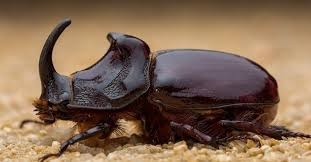
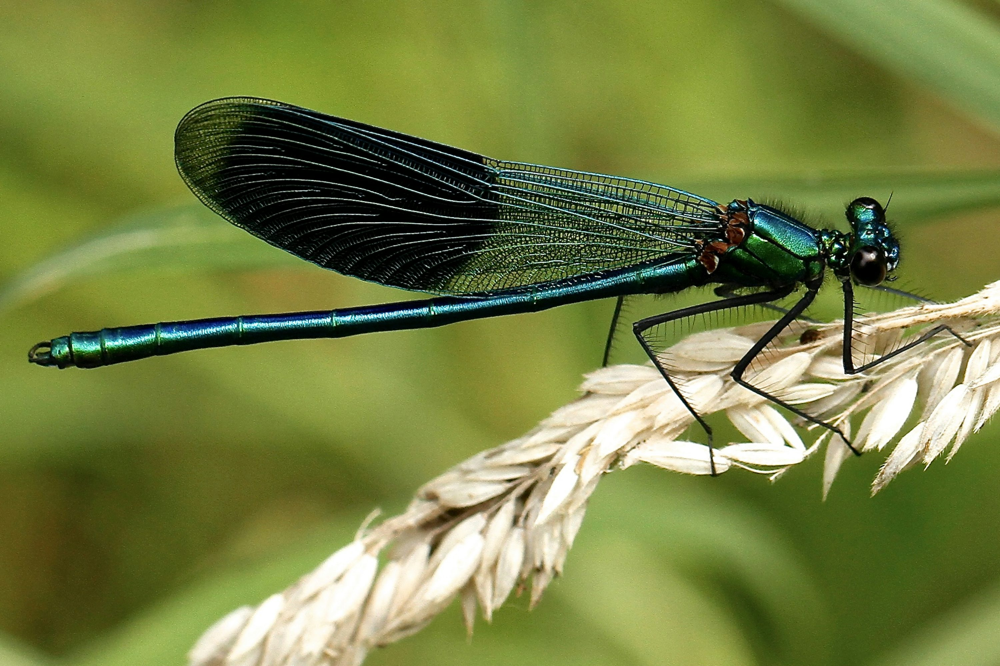
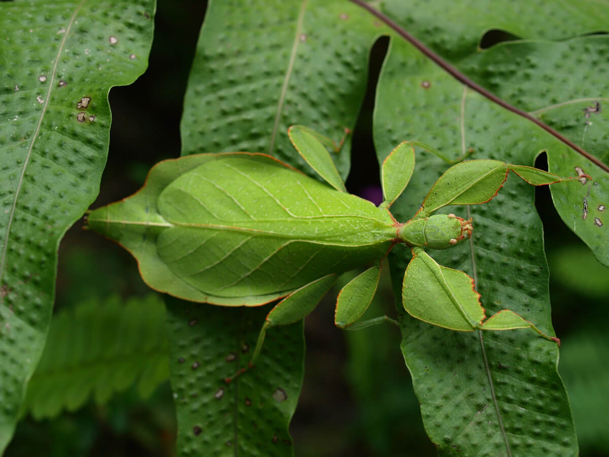
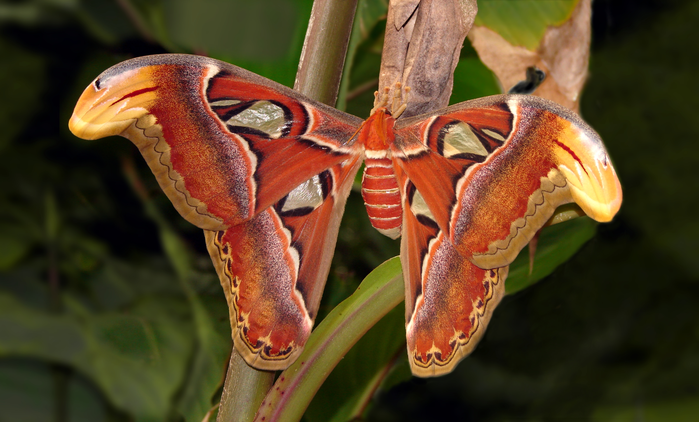
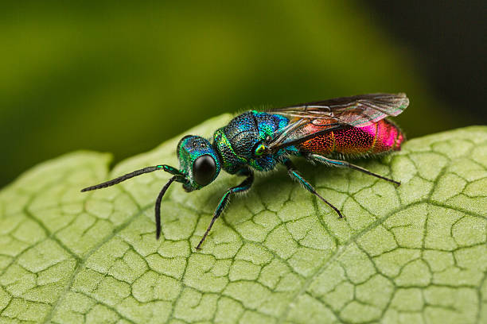
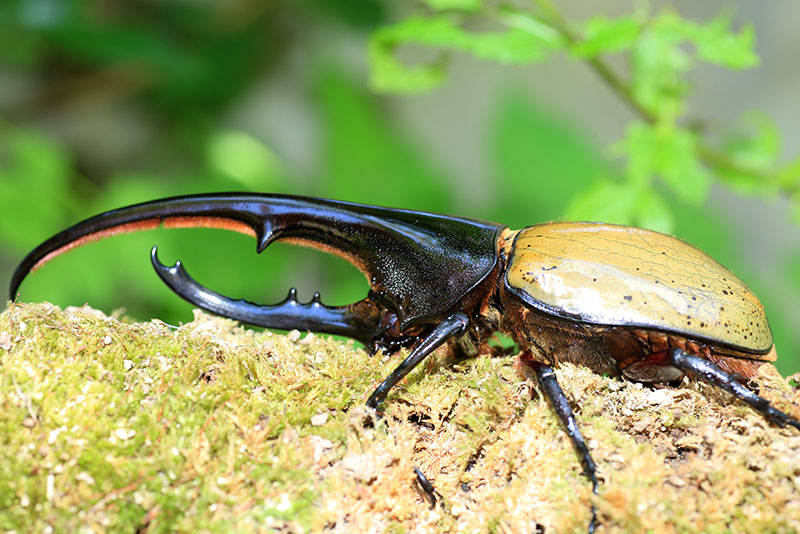
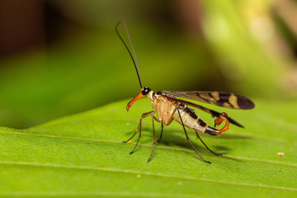

El mundo de los insectos |
|||
|---|---|---|---|

|
Los insectos son criaturas invertebradas que pertenecen al filo de los artrópodos. Representan el grupo animal más diverso del planeta, con cerca de un millón de especies descritas y una población inmensamente numerosa en cada una de ellas. De hecho, se estima que podrían existir hasta 30 millones de especies aún no identificadas. Se caracterizan por tener dos antenas, seis patas y dos alas, a pesar de que en ocasiones no les sirven para volar. Tienen el cuerpo dividido en tres partes: cabeza, tórax y abdomen y en algún momento de su vida, por lo general cuando pasan a la etapa adulta, experimentan un cambio drástico llamado metamorfosis. Aquí tienes una galería fotográfica con cientos de imágenes de insectos: |
|
|
Escarabajo Rinoceronte

Nombre cientifico: Dynastinae Habitad: Selvas tropicales Curiosidad: Puede levantar 850 veces su peso |
Libélula

Nombre cientifico: Anisoptera Habitad: Lagos y ríos Curiosidad: Tiene una visión de casi 360° |
||
Insecto hoja fantasma

Nombre cientifico: Phyllium philippinicum Habitad: Selvas tropicales del sudeste asiático Curiosidad: Su cuerpo imita perfectamente una hoja, incluso con “venas” y bordes mordidos |
|||
Mariposa atlas

Nombre cientifico: Attacus atlas Habitad: Bosques tropicales de Asia Curiosidad: Es una de las mariposas más grandes del mundo, con alas que parecen cabezas de serpiente para ahuyentar a sus depredadores |
Avispa cola de rubí

Nombre cientifico: Chrysis ignita Habitad: Zonas templadas de Europa Curiosidad: Brilla con colores metálicos y pone huevos en nidos ajenos; sus larvas se alimentan de los huevos del huésped |
Escarabajo Hércules

Nombre cientifico: Dynastes hrcules Habitad: Selvas de América Central y del Sur Curiosidad: Puede levantar hasta 850 veces su peso corporal; tiene un cuerno impresionante en los machos |
Mosca Escorpión

Nombre cientifico: Panorpa communis Habitad: Bosques húmedos de Europa Curiosidad:Tiene una cola que parece de escorpión, pero no pica; la usa para cortejar a las hembras |